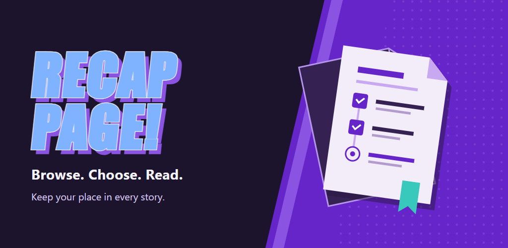
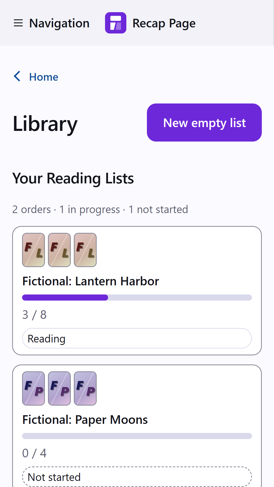
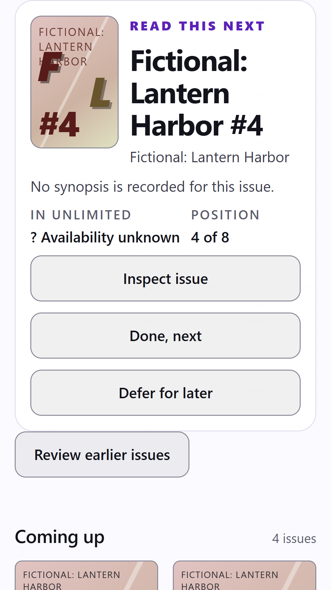

Explore Marvel
Explore Modern Timeline, Marvel Ages, Storylines, Character spotlights, creator guides, and MCU Prep. Reading Paths track progress across longer stories.
Recap Page
Find Marvel reading lists and keep track of what you've read.
On desktop today. Android in development.

No Recap Page account. No automatic device sync or offline comic reading. Comics and a Marvel Unlimited subscription aren't included.
Android in development
No computer needed. Built-in lists and saved progress work offline. Search and Marvel reading need an internet connection.
Not available on Google Play. The beta doesn't include all the features shown here.


Android previews made in a desktop browser, not on a phone. Lists and progress are made up; cover art is off.
On desktop and in the Android preview.
Explore Modern Timeline, Marvel Ages, Storylines, Character spotlights, creator guides, and MCU Prep. Reading Paths track progress across longer stories.
Defer for later skips a comic in one list without marking it read. Return to deferred or earlier issues anytime.
Search issues, series, and creators. Add comics by hand, write notes, and hide descriptions until you're ready.
See what's unknown, scheduled, or expected, and record your own available or unavailable checks. Missing guide entries stay visible.
Save a JSON backup or preview a Markdown checklist. Share an order without notes, reading history, or availability choices.
Try Iron Fist, Namor, Shang-Chi, Nova, Ms. Marvel, Hawkeye, Age of Apocalypse, Onslaught, or Greg Pak's Hulk. All include source credits.
An example with made-up progress.
An issue marked read stays read across lists. Each list keeps its own order.
Desktop views with cover art off.


Install and update through Microsoft Store.
Open Microsoft StoreAndroid 8 or later, with an up-to-date Android System WebView.
Set up the Android betaUnzip, then run Start on Windows.cmd.
Download for WindowsRequires Node.js 20 or newer.
Source setup guideOpen Recap Page Already running?
Save and check a backup before switching Android apps. The beta and future official app save separately. Uninstalling deletes the app's data.